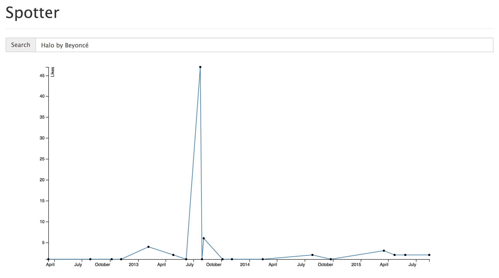
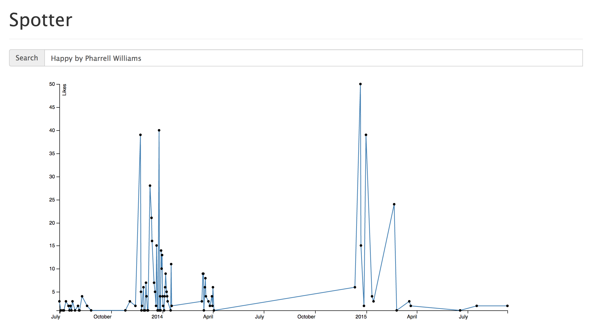

Post 2

Visualizations
We used D3 for our data visualizations with the database of songs and jams that we created. To start off, we wrote a query that grabs all jams and the number of likes for each jam associated with a particular song. Currently, our web app provides a simple UI for users to search for a song by name. Our backend that queries our database for the given song and sends data to our front end to populate a line graph that graphs the number of jams and their likes by the jam's creation date.


Above are two visualizations of our data for two popular songs: Halo by Beyonce and Happy by Pharrell Williams. We can see that Happy had a spike in popularity initially when it was first release (November 21st, 2013), and then once more near the beginning of 2015. A reasonable assumption
Machine Learning
For the machine learning part, we used a LogisticRegression classifier. For the features we used acousticness, danceability, energy, instrumentalness, loudness, mode, speechiness, tempo, valence, liveness from our database. We believe these values would be in correlation with our label-spotify_song_popularity. We also do a 10-fold cross validation so that we don't overfit our training data. However, our numbers were not very promising. We got 42.5% accuracy for the training data and 40% for the test data. We believe this is because of two things. Firstly, most of the values for song popularity we have are 0's. This, and the fact that we don't know how spotify comes up with these values suggest that we should look at creating our own metric for popularity. We will be using the number of likes instead. Secondly, we are using a subset of our data for training and we intend to train our classifier on a larger subset.
Challenges
Looking Forward
We plan on modifying our database to include audio features for each song. Spotify's API contains additional information for a song, including metrics suchs as 'danceability', 'energy', 'liveness', etc., and this information could be used in calculating a song's popularit trend. An updated ER diagram representing our new database schema can be found below.

Our next step is to create our Web App using D3 to visualize our data. This way, we can see trends develop.